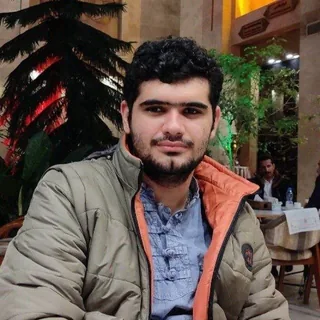
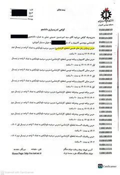
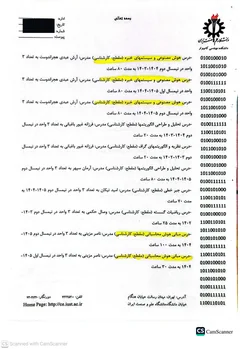
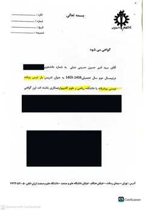
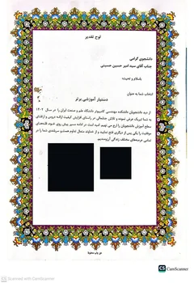
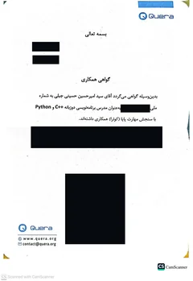

Stage 01Python Basics
شروع از صفر
آشنایی با پایتون بهعنوان زبان کار با داده و مدلها.
توی این دوره قراره با هم از مبانی ریاضی و الگوریتمها شروع کنیم و تا پیادهسازی مدلها با PyTorch و مطالعه مقالات علمی پیش بریم. یک مسیر عمیق و کاربردی.

امیر جبلی
Computer Engineering Graduate | AI & ML Educator
اعتماد و سابقه
این اعداد از دورهها و تدریسهای گذشتهم هستن، نه آمار ثبتنام دوره پیشرو.
دوره پایتون تابستان ۱۴۰۳
تدریس Python و ++C در کوئرا
دوره قبلی مبانی AI و ML برای ۶۰ دانشجو
تحصیل ریاضیات قبل از مهندسی کامپیوتر
دو پایه آموزشی
دوره روی دو پایه ساخته شده: پیادهسازی عملی و درک تئوری. هر دو با هم.
با پایتون و PyTorch مفاهیم یادگیری ماشین رو به کد تبدیل میکنیم، الگوریتمها رو از پایه پیادهسازی میکنیم و سراغ پروژههایی میریم که مهارتهای کاربردی میسازن.
ریاضیات، آمار، بهینهسازی و مبانی علمی الگوریتمها رو بررسی میکنیم تا مدلها رو عمیقتر درک کنیم و با پشتوانه علمی سراغ مقالات پژوهشی بریم.
«نه صرفا کدنویسی بدون فهم تئوری؛
نه صرفا ریاضی بدون کاربرد عملی.»
مسیر یادگیری
این مسیر فلسفهی برنامهریزی یادگیری رو نشون میده؛ سیلابس نهایی بهزودی اعلام میشه.
آشنایی با پایتون بهعنوان زبان کار با داده و مدلها.
بردارها، ماتریسها، مشتق، بهینهسازی و احتمالات؛ زبان مشترک درک الگوریتمهای یادگیری.
از رگرسیون و درخت تصمیم تا مدلهای مبتنی بر فاصله و شبکههای عصبی؛ چرا و چگونه کار میکنن.
ساخت مدلها با PyTorch، آموزش، ارزیابی و دیباگ؛ از تعریف لایه تا حلقه آموزش.
سراغ پروژههای واقعی میریم تا مهارتهای مهندسی و تحلیلی برای ساخت مدلهای کاربردی شکل بگیره.
با پشتوانه علمی، سراغ مطالعه مقالات یادگیری ماشین میریم تا با زبان پژوهش آشنا بشیم.
سیلابس دقیق، زمانبندی و جزئیات اجرایی دوره بهزودی اعلام میشه.
مدرس دوره
سلام! فارغالتحصیل مهندسی کامپیوتر از دانشگاه علم و صنعت ایرانم. قبلش ۷ ترم ریاضیات خوندم و هرچی یاد گرفتم امروز تو درک عمیقتر یادگیری ماشین بهکارم میاد. توی دانشگاه، دستیار آموزشی درسهای مختلفی مثل یادگیری ماشین، یادگیری عمیق، هوش مصنوعی و پردازش زبان طبیعی بودم و الانم عاشق آموزش همین مفاهیمم.
مشاهده آموزشهای رایگاندر دوران فعالیت بهعنوان دستیار آموزشی ارشد (Head TA)، این وبسایتها رو برای مدیریت و پشتیبانی آموزشی درسهای مختلف راهاندازی کردم.

سوابق تدریسیاری دانشگاه علم و صنعت (۱) سوابق تدریسیاری دانشگاه علم و صنعت (۲)
سوابق تدریسیاری دانشگاه علم و صنعت (۲)

سوابق تدریسیاری دانشگاه علم و صنعت (۳) سوابق تدریسیاری دانشگاه علم و صنعت (۴)
سوابق تدریسیاری دانشگاه علم و صنعت (۴)

گواهی تدریسیاری برنامهنویسی
افتخار دستیار آموزشی برتر
گواهی تدریس Python و ++C در کوئراتجربه فنی و پژوهشی
برخی از پروژههایی که انجام دادم و پژوهشهایی که در حال حاضر روشون کار میکنم.
Spoken QA — Research in Progress
در حال پژوهش و طراحی سامانهای چندوجهی برای ارزیابی پاسخهای شفاهی با استفاده از تشخیص گفتار، ارزیابی معنایی پاسخ و تحلیل آکوستیکی، تحت نظارت دکتر مزینی و دکتر داودآبادی.
Implicit Anger Detection — Research in Progress
در حال توسعه مدلی هوشمند برای شناسایی عصبانیت پنهان در متون فارسی، تحت نظارت دکتر داودآبادی. این پژوهش در مرحله تهیه مقاله قرار داره.
Deep Learning Book — In Preparation
به همراه دکتر داودآبادی در حال تهیه و تألیف کتابی در زمینه یادگیری عمیق هستم. این کتاب در مرحله نگارش قرار داره.
AI-Powered Smart Planner
فعالیت بهعنوان متخصص هوش مصنوعی در یک سامانه برنامهریزی هوشمند با مدیریت یکپارچه تقویم و اعلانهای خودکار.
Automatic Soccer Video Commentary
استفاده از مدلهای یادگیری عمیق روی مجموعهداده SoccerNet برای تولید شرح خودکار از رویدادهای ویدیویی فوتبال.
Human Genome CNV Analysis
تحلیل و مصورسازی تغییرات تعداد نسخه (CNV) در ژنوم انسان بهعنوان یک پروژه تحلیل دادههای ژنومی.
Reinforcement Learning — Lunar Lander
پیادهسازی یک عامل یادگیری تقویتی از پایه برای شبیهسازی Lunar Lander.
تجربه آموزشی گذشته
حدود ۱۰۰ ثبتنام
تدریس عمومی با همکاری کوئرا
محتوای آموزشی ML
محتوای آموزشی AI
برای استفاده بهتر از زمان کلاس، بعضی مباحث مقدماتی که قبلا ضبط کردم بهعنوان منابع کمکی معرفی میشن. توی کلاس روی مباحث جدید، تمرینهای عملی، مفاهیم تخصصی تمرکز بیشتری داریم.
منابع پیشنیاز رایگان
برای شروع، تسلط قبلی به یادگیری ماشین یا ریاضیات پیشرفته لازم نیست. فقط پیشنهاد میکنم با مبانی پایتون آشنا بشی؛ یکی از آموزشهای مقدماتی معرفیشده برای شروع کافیه.
t.me/Iustech/1205
آره، قراره مفاهیم یادگیری ماشین از پایه و با هم شروع بشن.
تسلط پیشرفته لازم نیست، ولی آشنایی مقدماتی توصیه میشه. منابع رایگان برای شروع معرفی کردم.
نه، مبانی موردنیاز رو توی مسیر دوره با هم میریم. البته پیشرفت توی مباحث تخصصی نیازمند تمرین و مطالعهست.
آره، کار عملی با PyTorch و پیادهسازی مدلها یکی از بخشهای اصلی برنامهست.
دوره طوری طراحی شده که پایه علمی و ریاضی مناسبی برای درک پژوهشهای یادگیری ماشین بسازه.
جزئیات هنوز اعلام نشده؛ بهمحض نهاییشدن برنامه اطلاعرسانی میشه.
اگه دوست داری از مبانی ریاضی تا پیادهسازی مدلها با PyTorch پیش بری، علاقهمندیت رو اعلام کن تا برای اطلاع از جزئیات دوره راهنماییت کنم.
«سلام، من به شرکت در دوره یادگیری ماشین امیر جبلی علاقهمندم. لطفاً وقتی جزئیات دوره مشخص شد، راهنماییم کنید.»
این مرحله صرفا برای اعلام علاقهمندی و دریافت اطلاعات بیشتره؛ ثبتنام قطعی دوره هنوز آغاز نشده.